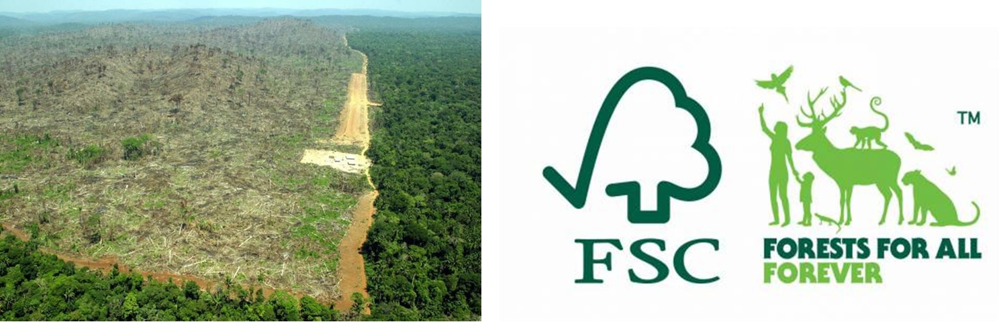
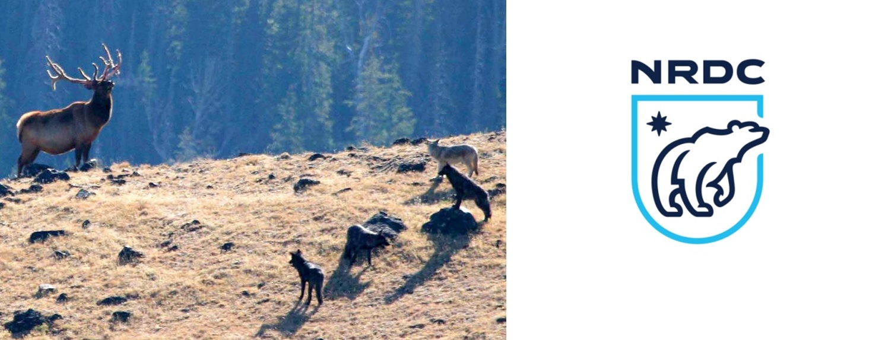
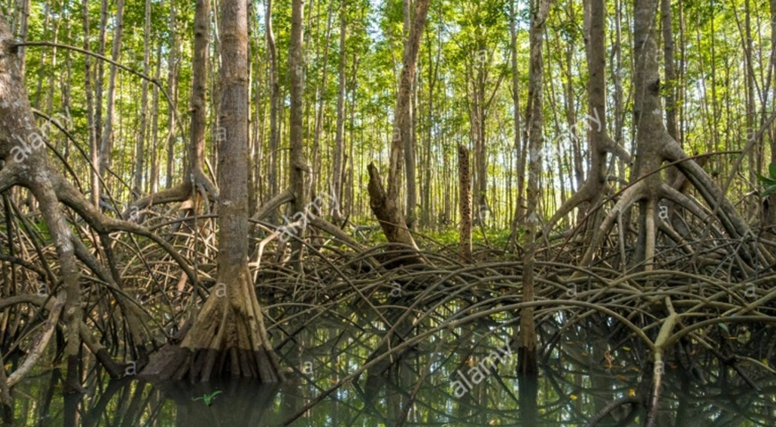
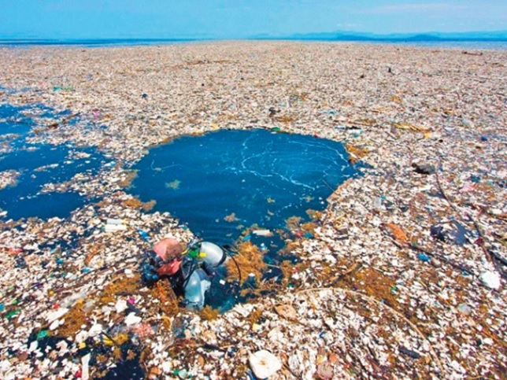
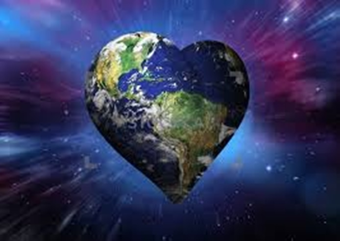

Earth-scale Solution to Fight Against Climate Change:
Really, it all began in 1950, according to Steffens’ and Al’s 2004 publication, “The Great Acceleration”. Their twenty-four graphs show that after 1945 and the end of WWII – which paved the way for what was to come – human activities began to gain steam and impact the global ecosystem : the world population started to skyrocket – at 8 billion – as well as water and energy consumption. The “Glorious Thirties” had arrived! It was the beginning of a new consumer revolution (the GDP shot up), but that wasn’t the only improvement; now transportation and, especially, public transportation were increasingly accessible and diversified: it was the beginning of tourism and internal tourism for all people. With more people, more factories, more consumption, more cars and planes: progress slowly plagued the whole planet. And as far as climate change is concerned, it has been considered a problem since the late 1970s and early 1980s. But solutions do exist! To know more, just read this carefully.
It is easy to think that climate change is too big of a deal and that we, as humans, are powerless against this issue. However, it is a misconception. We don’t need any fancy technology to save our planet. Solutions are all around us. We only need to take action now.
For a start, we could help restoring the earth’s ecosystem, with that the earth could begin regulating itself.
Restoring forests
With the appearance of humans on this planet, half of the trees have been cut down. However, we all know the power forests hold. Often referred to as the lungs of the world, forests assimilate carbon from the air, process it and release oxygen into the atmosphere. Sadly, due to large scale cattle ranching, commercial timber and palm oil plantations, deforestation is still an ongoing process.
What you can do is support associations that replant trees such as Reforestation World and Reforestaction or use the search engine, Ecosia, instead of Google Chrome. We can also try to eat a more plant-based diet, boycott brands that use palm oil, and only buy wood carrying the FSC label preventing illegal timber.
Protect wild life
Since the 16th century, 83% of mammals have disappeared. In fact, the exaction rate is going –if you are standing up, please seat down and take a deep breath- a 100 time faster than it’s supposed to! We are currently entering the 6th mass extinction. To save humans from going extinct we first must save other species – keystone species more precisely. It’s not about saving pandas and polar-bears based upon the fact that they are cute and we don’t want them to die. Many species, such as starfish, bees and beavers, might not benefit from the same amount of public attention, but the survival of entire eco-systems rest upon them – the fertilization of plants, spreading seeds in the wild and maintaining the food-chain balance.
To illustrate, let’s take, for example, Yellowstone National Park. Wolves are very unpopular among ranchers and have been hunted intensely until being totally wiped out of the park. Elks, no longer having predators, started multiplying and over grazing – eating all the willow that beavers needed to survive during winter. Once wolves were reintroduced, despite the population of elks being 3 times more than before, there is plenty of willow for the beavers, because wolves keep the elks moving, thus preventing over-grazing in an area.
We have the responsibility to educate ourselves about those keystone species and to talk about it to the people around us.
You can find extra information on the NRDC website and help fund their various projects and support or sign their petitions.
Restoring costal habitat
67 % of mangroves, 35% of marshes and 30% of sea grass have disappeared from our planet. We have strongly damaged coastal habitats due to tourism and industrialisation; this must be stopped and fixed. The lack of awareness and respect of these areas is detrimental. Indeed, what you don’t know is that costal habitats are incredibly efficient: they process carbon 40 times faster than the Amazonian forest! Moreover, mangroves store carbon deep underground and when they are damaged, they release carbon centuries old!
Because humans live on land, we feel some distance between us and marine life: what you can’t see can’t hurt you right? Well, that couldn’t be more wrong. For decades, we have been discharging plastic and trash into our oceans and burning incredible amounts of fossil fuels, such as with freight ferries, making our oceans acidic. The consequences of this lack of consideration for the maritime world are disastrous, with coral reefs drying out and dying, tons of animals are being intoxicated or trapped by garbage. We are killing key species and destroying the balance of biodiversity.
Our solutions are simple, volunteer to restore costal habitats, oppose the urbanisation of crucial littorals, buy local goods to avoid unnecessary shipping, educate yourself and support the key association like oceancleanup –whose aim is to get rid of 90% of floating plastic in the oceans.

Since humans appeared on this planet, a lot of things were taken from it in order for us to grow. It is now time to give back to Mother Nature so she can flourish once again. Be the bigger person, spread the word and spread the love.
